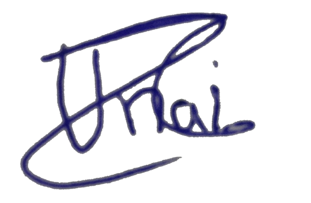
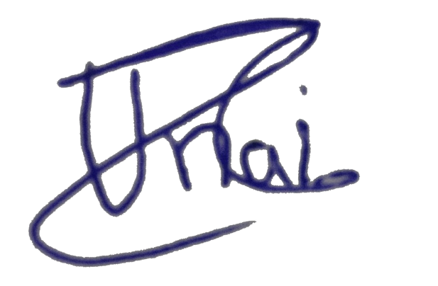

Redes Sociales
En la pagina de Inicio estan los enlaces mis pricipales redes sociales. No uso mucho este tipo de redes pero es cierto para la comunicacion son muy utiles asi
que las vuelvo a dejar por aqui.


Tecnologia usada
En esta pagina web se usan varias de las tecnologias de los html como las etiqutas basicas de div, a, img o h1. Tambien se han añadido animaciones para realizar la accion
de los botones. Se ha diseñado un logo personal para esta página web donde se reflejan las primeras letras de mi nombre y de mi apellido. Tambien hay un apartado donde
hay incrustado un pdf con mi CV. Esta página fue diseñada con antelación pero no lo sigue del todo por tiempo. Esta pagina ha sido diseñada y creada por Unai Antón Ríos.

